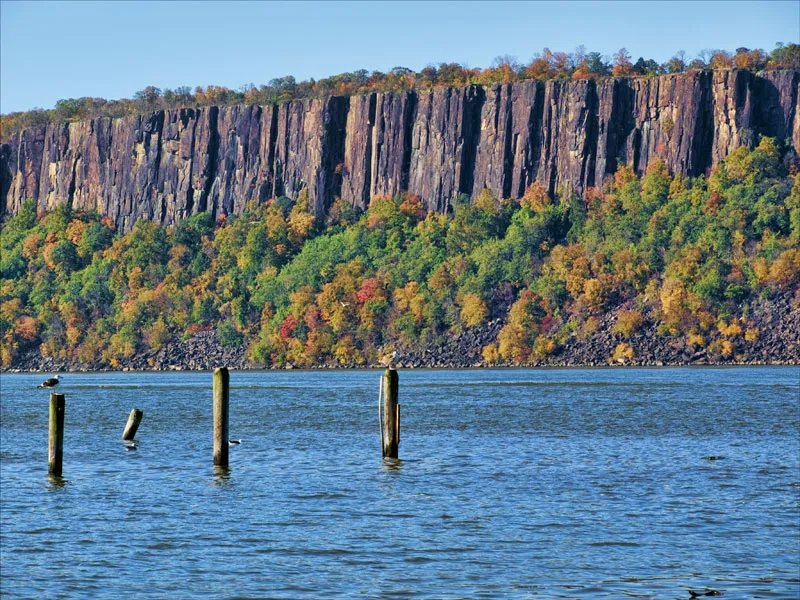

Background & History
From the breakup of Pangaea to the conservation campaign that saved the cliffs from the quarries.

As Pangaea broke apart, magma rose and cooled forming a sill of hard diabase beneath overlying layers of softer rock.
The glaciers of the Ice Age helped shape the eastern edge of the sill into the cliffs we see today, scouring away the loose rock around them.
The Lenape people who inhabited the area called them Wee-Awk-En meaning “Rocks that look like trees.”
Colonists started calling the cliffs The Palisades because they closely resembled the defensive wooden stake walls, which they called palisades, built around forts at the time.
After the Civil War, the Palisades were nearly destroyed by quarrying. Mining companies blasted large sections of the cliffs for construction stone, which led to widespread public outrage.
A grassroots conservation campaign saved the cliffs. The New Jersey State Federation of Women's Clubs spearheaded a public preservation movement that resulted in the creation of the Palisades Interstate Park Commission on March 22, 1900. With support from New Jersey, New York, and donors such as financier J. P. Morgan, quarry lands were acquired and protected, creating America's first major bi-state park system.
Conservation continues today in Bergen and Rockland Counties. The Palisades Interstate Park Commission still manages the protected land, while the Palisades Nature Association manages Greenbrook Sanctuary.